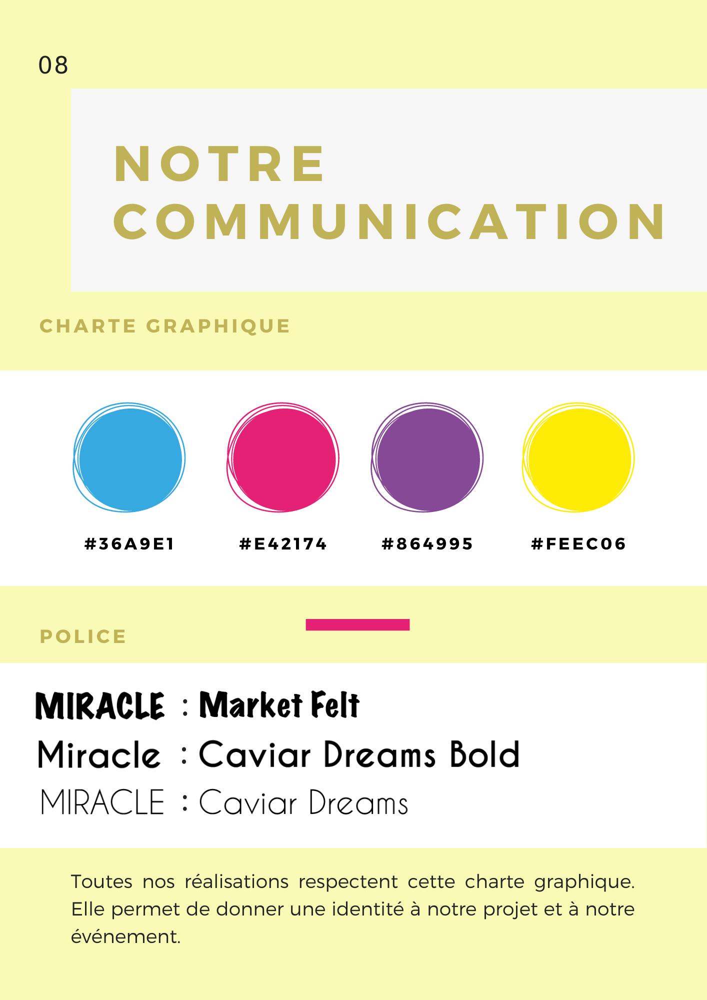
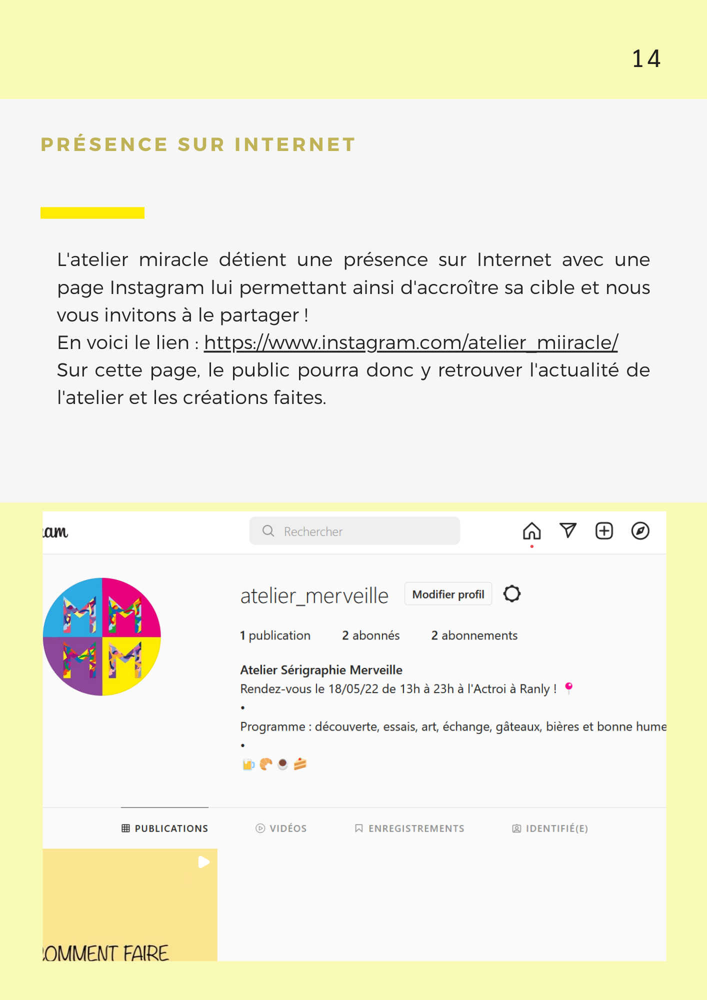

J'ai choisi d'étudier la spécialité "Transmédia" pour mon dernier semestre en DUT MMI. Dans le cadre de cette spécialité, nous avions pour mission de mettre en place une communication transmédia autour de l'ouverture d'un atelier de sérigraphie "Miracle" à l'Octroi-Nancy. Nous étions un groupe de 5 étudiantes pour créer cette communication ayant pour but d'informer de l'ouverture d'un nouveau lieu de création artistique et des services qu'il propose, d'expliquer le concept de sérigraphie en suscitant la curiosté et le désir de le découvrir, mais également de mettre la lumière sur ce qu'est l'Octroi et sur l'équipe des 5 illustrateurs et artistes membres de l'atelier.
DOSSIER DE PRESSE
Voici le dossier de presse de notre commmunication transmédia dans lequel se trouve nos choix de cible, d'univers narratifs, de médias utilisés et de liens entre ceux-ci ainsi que nos différentes réalisations. C'est dans ce document qu'est détaillé et expliqué la totalité du projet.




MON ROLE
Voici une vidéo ayant pour but d'expliquer ce qu'est la sérigraphie. Celle-ci a été réalisée en motion design. Chacune des membres du groupe a dessiné à la tablette graphique plusieurs des illustrations présentes au sein de la vidéo. J'ai moi-même réalisé certaines de celle-ci et je me suis également chargé de la totalité de l'animation de ces illustrations sur le logiciel After Effect ainsi que de la rédaction du script. Cette vidéo est disponible sur le compte Instagram que nous avons crée pour l'atelier.
Nous avons également réalisé une interview d'une des membres de l'atelier dans laquelle celle-ci nous explique brièvement le procédé de sérigraphie et exprime son interêt et celui de l'atelier Miracle. Cette vidéo a pour but d'inviter à se rendre à l'ouverture de l'atelier.
AU début de l'interview, le fondu du visuel d'une des affiches de l'évènement vers l'objet réelle qu'est la pinte de bière permet de créer un lien entre l'univers des affiches et celui du compte Instagram de l'atelier, la vidéo étant postée sur celui-ci.
.Je n'ai pas pu être présente lors de la prise de vue mais j'ai réalisé le montage de la vidéo.
Nous avons également crée des goodies en lien avec l'atelier. Ceux-ci sont destinés à être distribués lors de l'évènement. Ils ont pour but d'à la fois rappeler l'axe choisi qu'est la convivialité par leur fonction (ecocups, dessous de verre, ...), mais aussi l'atelier en lui-même par leur design qui reprend celui des affiches.
J'ai réalisé les ecocups sur le logiciels blender ainsi que cette brève vidéo.
J'ai également réalisé les visuels de ces deux affiches.